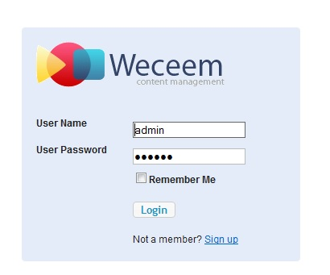
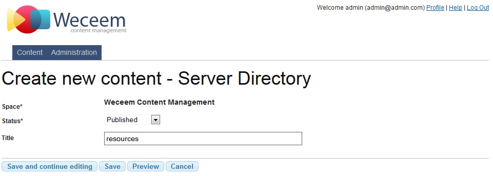
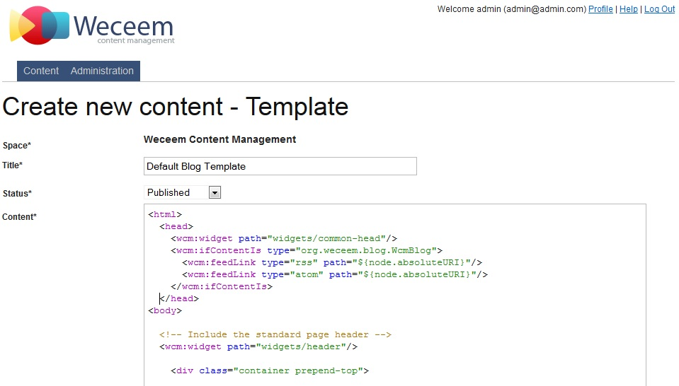
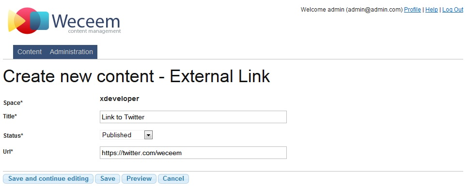
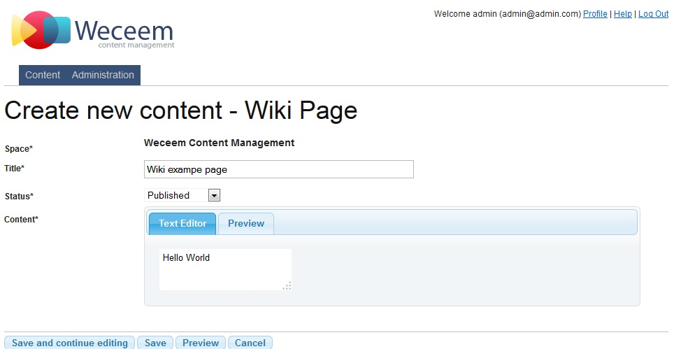

4 User Guide - Reference Documentation
Authors: Stephan Albers, Mark Palmer, July Antonicheva
Version: 1.3
Table of Contents
4 User Guide
4.1 Administrative UI
To edit or create content, view the content repository or perform any administrative functions you must first log in to Weceem.You can do this by browsing to <yourserver-url>/admin if you are using the standalone Weceem WAR. Here you will be prompted for your user name and password. By default new installations have a single "admin" account with password "admin". You must change this password, and you can do so in the Administration section. Logging in to your own application that uses Weceem pluginNormally this will be a case of browsing to <yourserver-url>/admin but your application may have configured weceem to use a different URL mappings such as /wcm/admin. You need to look at your application's configuration if /admin does not work for you.Weceem contains administrative UI for users that have access to creating new content and managing existed sources. In your weceem.properties file or in Config.groovy file the user can customize URL that leads to admin UI. By default the mapping "wcm/admin" will be used.Admin UI consists of two tabs: "Content" and "Administration".Content tabThe content repository is the main user interface for Weceem. What you see in the repository is the tree of content for the currently selected space. You can switch spaces using the
space selector box.Each row in the table represents one of your content nodes. You can do the following things with rows:
What you see in the repository is the tree of content for the currently selected space. You can switch spaces using the
space selector box.Each row in the table represents one of your content nodes. You can do the following things with rows:
- To select a node, you click its row (but not the icon).
- To drag a node to a new location in the tree, you drag the content's icon
- To edit the content you click the title of the content
- Spaces
- Synchronize files
- Plugins management
- Licenses
- Check links
- Users
4.2 Create Space
Weceem supports multiple content repositories. Each repository is called a "Space" and represents a website that you maintain.About spacesA Space contains "Content" that is served to your visitors. There are many different types of Content that you can create and arrange in any structure you like within your Space. You can have as many spaces as you like, representing different sites or micro sites.Spaces are separate content graphs and are imported and exported separately for backup purposes and have a URI alias that defines the web address of that space within your server. You cannot normally use content from one space inside another.Spaces can have different access rights defined in the Weceem security policy, so the same user may have different permissions in different spaces. Each Space is determined by its name and alias URI, where alias URI is a prefix for your site (Space), that will be used
in URL mappings when you try to review the ready site content.
Each Space is determined by its name and alias URI, where alias URI is a prefix for your site (Space), that will be used
in URL mappings when you try to review the ready site content.
4.3 File Synchronization
Synchronizing a space with the server filesystem will create new content nodes for any directories and files that exist in the filesystem but are not currently in the content repository.You will be given the option to delete any content nodes that refer to server files or directories that no longer exist.4.4 Plugins
The feature you selected is not quite ready. Please view the Weceem.org roadmap for what is coming in the next release.4.5 Licenses
Weceem is 100% open source licensed. The Weceem application and plugin and Grails are Apache 2 licensed The jQuery and jQuery UI libraries are provided under the MIT license.4.6 Check Links
The feature you selected is not quite ready. Please view the Weceem.org roadmap for what is coming in the next release.4.7 CMS User management
To create, edit or manage the content repository, users must be able to log in to the CMS.When using the Weceem Application, a simple user management system is provided.To access this, log in as administrator and go to the Administration section and then select Users. From there you can create and edit users.
4.8 Create HTML pages
About contentContent is ultimately what your end-users view on your site. Weceem has an extensible content system, and supplied content types for the most common web content.The following content types are supplied out of the box:- Action - A server-side action that will execute the code in a Groovy Script node, for example to create new content
- Blog - The root node of a Blog, which has Blog Entry nodes as children
- Blog Entry - An entry (child of) a Blog node
- Comment - A comment on a content node. Any nodes can have comments attached or created.
- External Link - A URL of another website. When this URI is rendered, it redirects to the external site
- Folder - A folder for grouping together content nodes and creating URI hierarchy
- Groovy Script - A piece of Groovy code to execute on the server, used by Action nodes
- HTML - A piece of HTML which may contain GSP (Grails Server Page) tags
- JavaScript - A piece of JavaScript source
- Server File - A file uploaded to the Weceem repository and stored on the server filesystem, e.g. an image file
- Server Directory - A directory on the server filesystem which contains Server File nodes
- Stylesheet - A CSS style sheet
- Template - A GSP template used to layout and decorate the current content node
- Widget - A reusable GSP fragment for rendering sections of a page, e.g. a header/footer or a remote news feed.

4.9 Create Blog, Blog Entries and Comments
Creating a blog in Weceem requires just two steps:- Create a Blog content node
- Create a Blog Entry content node underneath (as a child of) the blog node
 Also it is possible to create or manage existed Comments. If you put a submission form for your Blog Entry page then
the users will push comments to your through your site. Also you can create new Comment from "Content" tab by pressing
button "New Content" and selecting Comment content type.
Also it is possible to create or manage existed Comments. If you put a submission form for your Blog Entry page then
the users will push comments to your through your site. Also you can create new Comment from "Content" tab by pressing
button "New Content" and selecting Comment content type. Visitor comments and submitted contentSites often permit visitors to leave comments - be they blog comments, visitor books or comments on Wiki pages.Weceem supports a generic mechanism for visitors to create new content nodes via a form, filtered through the security
policy.This is, for example, how the default space implements comments on blogs. A widget is used to render a form to capture
the comment fields and submit them to Weceem's content submission controller - where they are, if the security policy
permits that kind of content at that URI, from that (anonymous) user - saved in an "unmoderated" status.
Creating a comment submission formTo allow users to submit content, you need to provide the data from the client browser - usually with a form that the
user completes. You will usually do this inside a Widget node so that the code can be reused:
Visitor comments and submitted contentSites often permit visitors to leave comments - be they blog comments, visitor books or comments on Wiki pages.Weceem supports a generic mechanism for visitors to create new content nodes via a form, filtered through the security
policy.This is, for example, how the default space implements comments on blogs. A widget is used to render a form to capture
the comment fields and submit them to Weceem's content submission controller - where they are, if the security policy
permits that kind of content at that URI, from that (anonymous) user - saved in an "unmoderated" status.
Creating a comment submission formTo allow users to submit content, you need to provide the data from the client browser - usually with a form that the
user completes. You will usually do this inside a Widget node so that the code can be reused:<wcm:submitContentForm parent="${parentContent}" type="org.weceem.content.WcmComment" success="${parentContent}"> <f:field bean="submittedContent" property="author"/> <f:field bean="submittedContent" property="email"/> <f:field bean="submittedContent" property="websiteUrl" label="Website URL"/> <f:field bean="submittedContent" property="title"/> <f:field bean="submittedContent" property="content"> <textarea name="content" cols="20" rows="5"></textarea> </f:field> <input type="submit" class="button positive" value="Send comment"/> </wcm:submitContentForm>
- g:hasErrors is a Grails tag used to detect any errors on the submittedContent data and alerts the user if so
- wcm:submitContentForm creates a form that will submit content of a specific type, as set in the "type" attribute.
- f:field tags are from the Grails fields* plugin that is provided as part of Weceem. They make it easy to render
4.10 Server Directory and Server File
If the user needs to add some files, f.e. images then it is possible to create a "Server Directory" on a file system and put your uploaded files as "Server File" there. Although there are special content types for CSS anf JS files such as "CSS Stylesheet" and "JavaScript Source", but they are restricted to be no longer then 500000 symbols. In case if the user wants to use the biggest CSS, JS libraries or images, the ServerFile is the type that is needed to be used.Firstly create Server Directory - the folder on the file system will be created, then put your uploaded files as Server Files to this directory.
4.11 Templates and Widgets
If the user needs to prepare template, he needs to select row in the content repository tree by clicking on it. As the result the row is preselected by color. The row selection means that the content will be child to selected content. Then at the top of Content tab there is a button New Content that offers a list of available content types to be created. Select the type "Template" and press "Create" button. The new content editor should be shown to the user. Usually the template is a GSP page that uses Weceem tags for rendering necessary content. Check Tags section for more details.Also it is possible to create widgets, by selecting content type "Widget" to prepare widgets for templates. Usually template is consists from widgets as from blocks. It helps template to be more flexible and customizable.
4.12 Create Action
It is possible to create content Action that is determined with Groovy Script that should be executed. For example, sending mails of checking links on the page. To create new Action is possible using button "New Content" at the top of repository tree and selecting content type Action in the available content types. The simple editor is available for creating user Actions.
4.13 Create Binary Content
The content type Binary Content represents files, that are stored in the data base using base64 encoding. Don't use it for large content. It is intended for logos etc. To create such content, please check that at the top of Content tab there is a button New Content that offers a list of available content types to be created. Select the type "Binary Content" and press "Create" button. The new editor similar to Server File editor should be shown to the user
4.14 Create CSS Stylesheets and Javascript Sources
There are two ways to create JavaScript and CSS resources in Weceem.You can upload JS and CSS files to "Server File" content nodes, or you create JavaScript and Stylesheet nodes and edit the files directly in Weceem.Whichever approach you choose, you include these files in your Template or Widget nodes something like this:<html> <head> <link rel="stylesheet" href="${wcm.createLink(path:'css/main.css')}"/> <script type="text/javascript" src="${wcm.createLink(path:'js/main.js')}"></script> </head> … </html>


4.15 Create External Link
The user has possibility to create content with the type "External Link". This content type is representing a link to an external URL . To create new External Link, check at the top of Content tab there is a button New Content that offers a list of available content types to be created. Select the type "External Link" and press "Create" button. The special content editor should be shown to the user.4.16 Create Groovy Script
It is possible to create Groovy Scripts, that can be used for creating new content Actions. For that aim at the top of Content tab there is a button New Content that offers a list of available content types to be created. Select the type "Groovy Script" and press "Create" button. The special content editor should be shown to the user.
4.17 Create Folder
It is possible to create Folders in content repository tree. The Folders usually used to organize content by types or logically. For example, the user can create Folders "CSS" and "JavaScript" and put CSS Stylesheets and JavaScript sources in them respectively.
4.18 Create Wiki page
It is possible to create Wiki page content by using button "New Content" at the top of repository tree and selecting content type Wiki Page in the available content types. The editor is available for creating new content. 4.19 Create Virtual Content
There is a possibility to create virtual content for any existed content in the content repository tree. For that aim, please check button "New Content" at the top of repository tree and select content type Virtual Content in the available content types. Each Virtual Content is determined by its "target" - the content node from repository tree.
4.20 Statuses, Publishing and Unpublishing by date
The statuses are very important part in content management. According to status of a content it can be shown, hidden, publish or unpublish by specified date.The following Statuses are provided:- Draft
- Unmoderated
- Reviewed
- Approved
- Published
- Archived
4.21 Search in Weceem
Weceem has full-text search support for visitors using your site.All of your content is automatically indexed as appropriate, all you need to do is add a way for them to start a search, and customise the display of the search results.To add a default search field, you can use the wcm:search tag:<wcm:search types="org.weceem.html.WcmHTMLContent,
org.weceem.blog.WcmBlogEntry,org.weceem.content.WcmComment"/>4.22 Operations with content repository tree
There is a list of operations that can be done with content repository tree. The button with dropping menu items is situated above the content repository tree, it is called "More Actions". The following operations are available:- Preview selected content
- Delete content
- Move to Space
- Duplicate...
 Move to Space operation should move content from one Space to another one, but currently not implemented yet.Duplicate should copy the selected content to the other holder, parent content or even in another Space, but
currently not implemented yet.Also there are several operations that can be done on content repository tree, f.e. the user can drag a content and
drop it as a child to another content. It is possible such way to move or copy the content to the another location.
Move to Space operation should move content from one Space to another one, but currently not implemented yet.Duplicate should copy the selected content to the other holder, parent content or even in another Space, but
currently not implemented yet.Also there are several operations that can be done on content repository tree, f.e. the user can drag a content and
drop it as a child to another content. It is possible such way to move or copy the content to the another location.
4.23 Tags and JSP content
Weceem is built with Grails which provides a technology called Groovy Server Pages. In essence, it allows you to embed special tags in the content to perform special functions or logic. Some content types in Weceem (Template, Widget and HTML) support the use of these tags to provide advanced features.To users of JSP (Java Server Pages) this will be a familiar concept.These custom tags or "GSP tags" as they are called, use the XML namespacing syntax:Search:<wcm:search/>
<g:each in="${node.lineage}">
${node.title.encodeAsHTML()}<br/>
</g:each>4.24 Reusing code and page fragments with Widgets
While Templates are used for laying out a page, Widgets are used to render fragments within a page. These might be page content such as header/footer text or reusable code that renders a list of news items.Widgets can use the same GSP tags as Templates, which makes them very powerful. The News content on the home page of this site is a Widget, and the default space renders blog entries using Widgets.To render widgets inside a Template (or GSP-enabled HTML content node) you use the <wcm:widget> tag:<html>
<head>
<wcm:widget path="widgets/resources"/>
<wcm:widget path="widgets/metatags"/>
</head>
<body>
<wcm:widget path="widgets/header"/>
<wcm:content/>
<wcm:widget path="widgets/footer"/>
</body>
</html><link rel="stylesheet" type="text/css" href="${wcm.createLink(path:'css/main.css')}"/> <script type="application/javascript" src="${wcm.createLink(path:'js/jquery.js')}"/>
4.25 Using images in HTML content
To insert images into HTML content, you use the image icon on the rich text editor's toolbar.This will allow you to:- upload a new image
- use one that has been uploaded already
- insert a URL to an image on the web
 When using the option to upload or browse the images on the server, the files will be located in the "/Image" folder on
your server (<weceem-application-path>/WeceemFiles/<space-alias>/Image).If you have uploaded files as Server File nodes, if you did not put them inside the /Image folder then they will not be
visible to the FCK file editor browser, but you can still link to them by entering in their full or relative URI.
When using the option to upload or browse the images on the server, the files will be located in the "/Image" folder on
your server (<weceem-application-path>/WeceemFiles/<space-alias>/Image).If you have uploaded files as Server File nodes, if you did not put them inside the /Image folder then they will not be
visible to the FCK file editor browser, but you can still link to them by entering in their full or relative URI.
4.26 Uploading and linking to files
There are two ways to upload files to your Weceem content repository.Creating Server File nodesWhen you create a Server File node in the repository, it will be uploaded from the Weceem editor into the server
directory allocated to the space, at a path defined by the Alias URIs of its ancestor Server Directory nodes.Once the file has been uploaded it cannot be changed - the node can be deleted and the file will also be deleted.You link to server file nodes in the same way as you do any other content, using the wcm.createLink or wcm.link tags.Uploading while editing HTML contentYou can also upload files - most likely images - using the file uploader in the rich HTML editor when editing a HTML
content node. It is important to note that all such files are uploaded to a /Image folder under your space's server
folder. Server File nodes will not automatically be created for these, and they are not needed - unless you use the
"Synchronize Files" option in the Administration section of Weceem.
4.27 Controlling who can see content and when
With Weceem you can restrict who can view your content by user role, as well as the date period during which the content is available.Automatic publishing and removal of contentEvery type of content has a Status, a Publish From and a Publish Until field. Together these work to provide a simple automatic publishing workflow.Writing content for automatic publishing laterTo write content today but have it available to view only at some point in the future you just do the following:- Set the status of the content to Draft, Approved or some other non-"published" status (apart from Archived!)
- Set a value in the Publish From field in the "Extras" section of the editor
4.28 Creating sites with content in different languages
Often your site will need to present content in multiple languages. You may provide translations of your site, say in French and German as well as your primary language. It is often the case that not only does the text differ in other languages, but images, CSS and other resources may have
differ, and in fact due to different territory restrictions you may have very different content for each language.With this in mind, the recommended way to achieve this in Weceem is to create a Folder node for each language you
support, and add the translated content under those folder nodes. For content that is the same as the primary language,
you could create Virtual Content nodes to "defer" to the original primary content.To give your users access to this content, you simply add some links or a selection box to your page templates - so they
click on the language they want and it takes them to the content for that language.
It is often the case that not only does the text differ in other languages, but images, CSS and other resources may have
differ, and in fact due to different territory restrictions you may have very different content for each language.With this in mind, the recommended way to achieve this in Weceem is to create a Folder node for each language you
support, and add the translated content under those folder nodes. For content that is the same as the primary language,
you could create Virtual Content nodes to "defer" to the original primary content.To give your users access to this content, you simply add some links or a selection box to your page templates - so they
click on the language they want and it takes them to the content for that language.
4.29 Site performance and caching content
Processing and rendering content in a CMS is a relatively time consuming activity, particularly with complex pages that render external feeds or loop over other content nodes.So as with regular websites it makes sense to use standard browser caching features to reduce the number of requests for content and supporting HTTP mechanisms for detecting changes to content.Weceem supports both of these aims by implementing smart ETag handling as well as allowing you to tell the browser how long to keep the content for before checking for new versions using ETag. With ETags, the browser still makes a request to the server to check for changes, but if there has been no change, receives no new content.This is done by calculating ETags for all URIs in your repository, based on the contents of other nodes on which those depend. For example even a simple home page is dependent on at least a Template node and likely at least a couple of widgets. This information is cached by Weceem, so checking for new content is very quick.However this means that the ETag for your home page must change if the Template or widgets have been edited - otherwise users will continue to see your old home page styling for some time.Weceem handles this by allowing you specify the URIs of content that a node is dependent on, a "maximum age" and also whether content contains user-specific information (which means that a different ETag is used per user).Content DependenciesWhen editing content, there is a "Content dependencies" field in the Advanced settings. This is where you enter a comma-delimited list of URIs on which the content node depends. By dependency we mean that this content's visual representation may change if any of these nodes are changed.Wild cards of the form / are supported, to represent any dependents.There is however no need to specify dependency on the content Template, because this is handled automatically for you.For example a Template used for your entire site may render widgets for header and footer. If you want all content that uses this template to become invalidated if the header or footer change, you would set the content dependencies to e.g:widget/header, widget/footerIf you had a dependency on a lot of widgets, you could simplify this with the wildcard:widget/Another example is a News widget that uses wcm:eachChild to iterate over the news article nodes at URI "news-articles". Here you'd set the content dependencies of the widget to:news-articles/This way, any template that depends on this news widget, will also depend on the news articles, and hence everything invalidates as appropriate.NOTE: some content types are smart and add some implicit dependencies. For example Blog automatically depends on its BlogEntry children. This is required because a Blog page normally lists its child nodes, and needs to update if new entries are added.Controlling how long a browser may keep a cached pageAside from the dependencies, you can tell the browser how long to wait before checking for new content. For example if you know that usually you don't post more than one news article per day, and that even if you did you didn't mind someone not seeing the very latest, you can tell Weceem this.Each content node has a setting labelled "Is updated" in Advanced. Here you can select how often the node is likely to be updated. If you never want it to be cached you can set this to "All the time". If you know that the content is unlikely to change you can set it to something like "Weekly" or "Never"Doing this reduces the requests made to your server - saving you CPU time and bandwidth, and improving the response time of your site for users.Note that if a user uses the "refresh" button in their browser, they will always get the newest content.User-specific contentIn some cases you may use Weceem's advanced scripting and widget features to present user-specific information. This typically uses the HTTP session to store user information, such as the contents of a shopping cart, or their user ID.By ticking the "User specific content" option (available on Template nodes only in 1.0), you can instruct Weceem to allow the client to use cached content but still update if that user's rendering of the content will have changed.When checked, this option forces Weceem to create a user-specific ETag for the content using that template. This is done by monitoring the HTTP session for changes. Any changes to the HTTP session result in a new ETag for pages using that template.If you have other data changes that should invalidate the user's view of the content, but don't directly change the session, you can force this simply by writing to the session.For example if you have a Widget that renders a log in / log out button depending on whether the user has a cookie or not (perhaps for a separate app on the same domain) you simply make that widget set a variable in the session if the cookie value is no longer present:<g:set var="hasCookie" value="${request.cookies.find { it.name == 'userInfo' }?.value}"/><%-- only if the presence of cookie has changed to we change the session --%> <g:if test="${session.userLoggedIn != hasCookie}"> <g:set var="userLoggedIn" scope="session" value="${hasCookie}"/> </g:if><%-- render the links --%> <g:if test="${hasCookie}"> <wcm:link path="user/logout">Log out</a> </g:if> <g:else> <wcm:link path="user/login">Log in</a> </g:else>
4.30 Publishing Feeds
You can expose RSS/Atom feeds of any list of child nodes in your repository with a simple tag, wcm:feedLink.This tag will create the correct <meta> tag in the HEAD section of your HTML so that any RSS readers that request the feed will get a list of nodes in reverse date order:<head> <wcm:feedLink type="rss" path="${node}"/> </head>